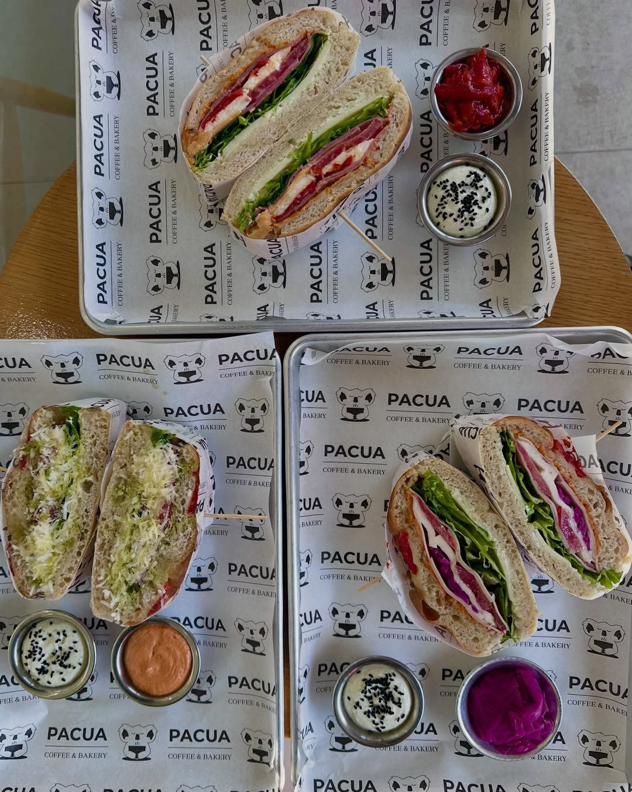
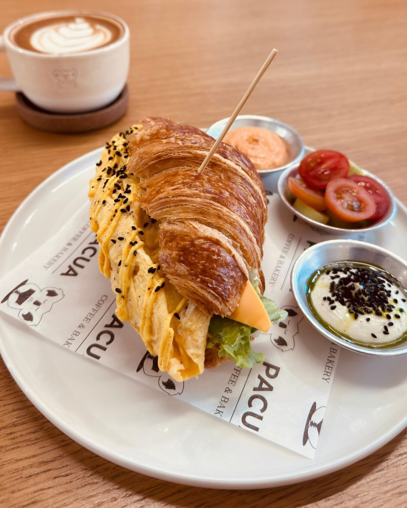
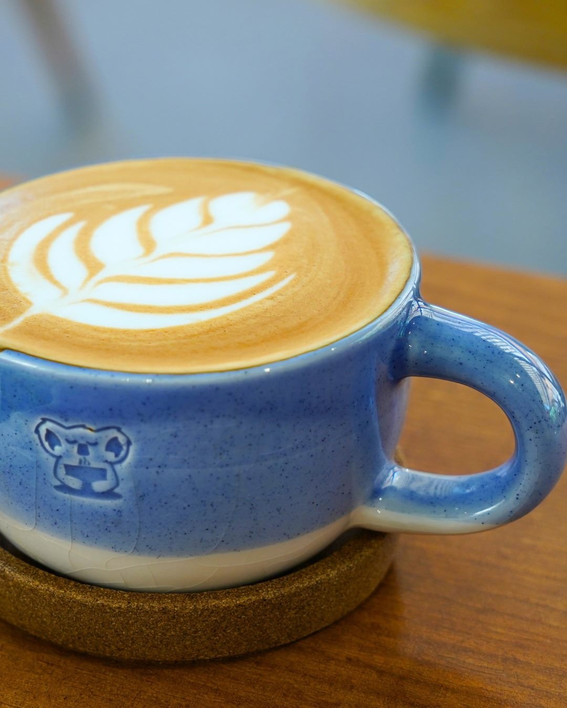
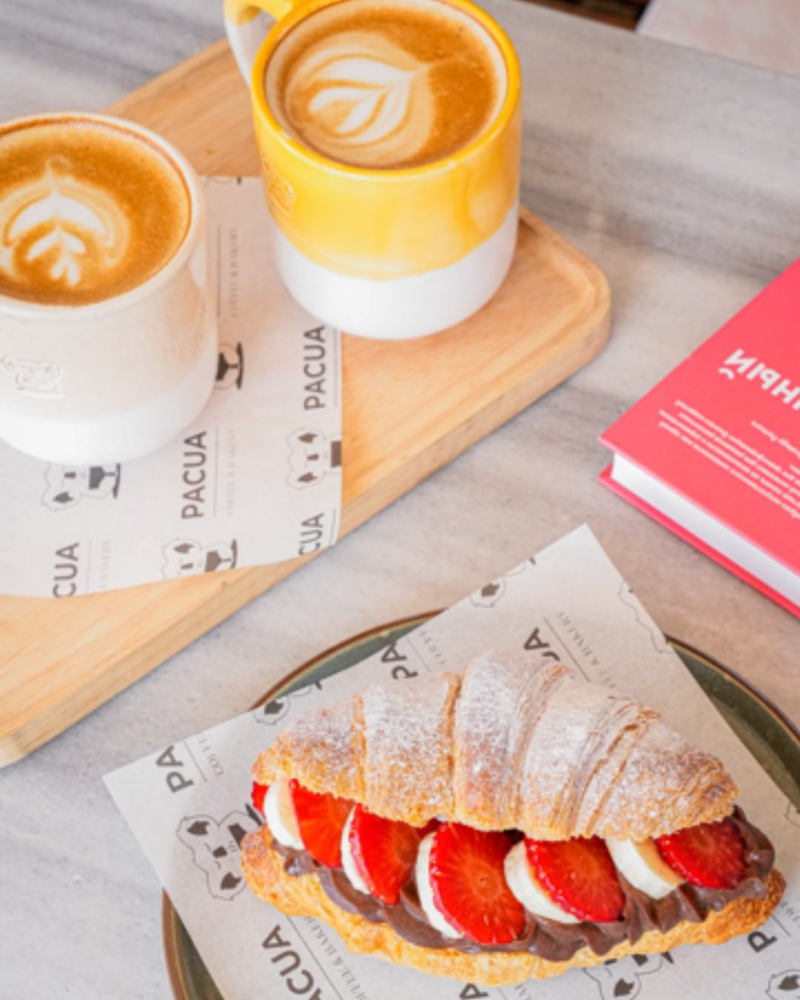

Focaccia sandviçler
Dolgun malzemeleriyle gün ortasına doyurucu bir mola.
Büyükçekmece, İstanbul
Çıtır katlar, dolu tabaklar, yanında sevdiğiniz kahve. Pacua’da güne güzel bir başlangıç yapın.
Kruvasanlı kahvaltı 08.30 – 16.00

Tuzlu bir başlangıç, tatlı bir ara ya da yalnızca kahve. Pacua’dan birkaç eşlikçi.

Dolgun malzemeleriyle gün ortasına doyurucu bir mola.

Sabahın ilk yudumuna da sohbetin devamına da.

Kahvenin yanına çilekli bir kruvasan ekleyin.
Kahvaltıya biraz zaman ayırın
Kruvasanlı kahvaltı servisimiz 08.30–16.00 arasında. Tuzlu ya da tatlı bir tabak seçin, kahvenizi söyleyin; günün telaşı biraz beklesin.
Pacua’dan daha fazla fotoğraf ↗Misafirlerimizin gözünden
“Kruvasanlarına zaten diyecek sözüm yok”Melisa ABAYYorumu Google’da okuyun ↗
“Kahveleri, tatlıları ve özellikle kruvasanları inanılmaz lezzetli.”Nagihan aydınYorumu Google’da okuyun ↗
“Kahvaltım son derece lezzetliydi, kahvem ise mükemmeldi.”Orhan AyYorumu Google’da okuyun ↗
Google yorumlarından kısa alıntılar. Puan ve yorum sayısı 2 Kasım 2026 tarihinde kontrol edilmiştir.
08.30 – 16.00
Kahvaltı saatleri resmî profilde belirtilmiştir. Açık günler ve güncel kapanış saati için ziyaretinizden önce bilgi alabilirsiniz.